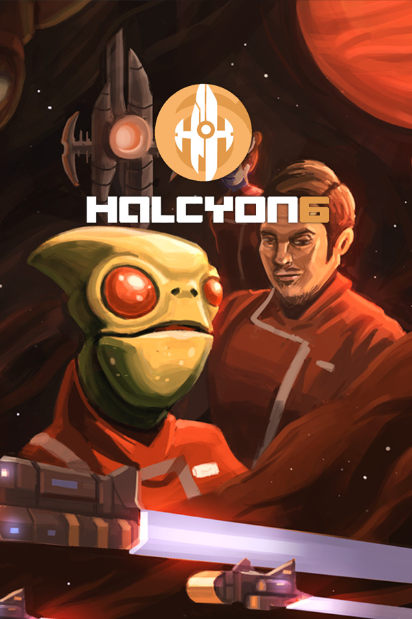

Halcyon 6: Starbase Commander
Halcyon 6: Starbase Commander
Details
|  | |
| Playtime | Not Played |
| Last Activity | Never |
| Added | 6/3/2022 4:21:14 |
| Modified | 1/26/2023 11:52:23 |
| Completion Status | Not Played |
| Library | Epic |
| Source | Epic |
| Platform | Epic Games |
| Release Date | 9/8/2016 |
| Community Score | 80 |
| Critic Score | 71 |
| User Score | |
| Genre | Indie RPG Simulation Strategy |
| Developer | Massive Damage, Inc. |
| Publisher | Massive Damage, Inc. |
| Feature | Achievements Cloud Saves Single Player Trading Cards Workshop |
| Links | Community Hub Discussions Guides News Store Page PCGamingWiki Achievements Workshop |
| Tag | |
Description

The Game
On the edge of Terran space lies Halcyon 6, a derelict starbase left behind by a mysterious precursor race. Your mission is to reclaim the derelict station and rebuild it.A mysterious alien force is making a beeline towards Earth and this starbase is the best chance for the New Terran Federation to establish new alliances, research new technologies and otherwise figure out a way to stop the impending invasion.
Using only the resources you can salvage from the derelict station and gathered from nearby star systems, it’s up to you to rebuild the starbase to lead the Terran Republic’s scientific research, exploration and diplomatic efforts on the edge of known space.
Halcyon 6 is a passion project who’s design is inspired by our years spent playing classic games like Star Control, Master of Orion, X-COM, Civilization and new classics like FTL.
Features:
- Base Building: spend resources to build station facilities (rooms) to enhance your production and technological capabilities, or build ships to help you control more territory
- Exploration: assign your fleets to nearby star clusters, where they can handle emerging enemy threats, do missions for alien factions or secure bonus resources
- Crew Management: assign crew to station facilities to greatly improve their output efficiency, or to ships where they can contribute in unique ways to combat, missions and events
- Deep Tactical Combat: fight tactical ship or ground battles to resolve hostile events, create a foothold in the sector and ultimately defeat the enemy mothership!
- Story Events: based on game criteria like rooms-built, alien diplomacy scores or officer traits/skills, the game will produce story events (often with multiple choice outcomes) that can lead to combat, time-related applied bonuses/negatives, officer attribute changes or any number of crazy in-game stories.
Project Goals
Unlimited Replayability: Each playthrough has players dealing with a new randomly generated derelict station, surrounding galaxy, crew recruits, and alien factionsMotley Crew: Each crew member has unlimited potential for acquiring unique behaviours, traits and abilities, for better or for worse. Making the best use of your dysfunctional crew will be one of the keys to success. Who should be your main Science Officer? The insomniac that works insane hours but has an addictive personality or the agoraphobic mad genius?
Encounters of the Weird Kind: There are 6 alien factions in Halcyon 6 and they are all quite different with varying objectives and personalities. Only your wit and your crew’s skills will help you navigate the diplomatic waters to gain them as key allies or valuable trading partners.